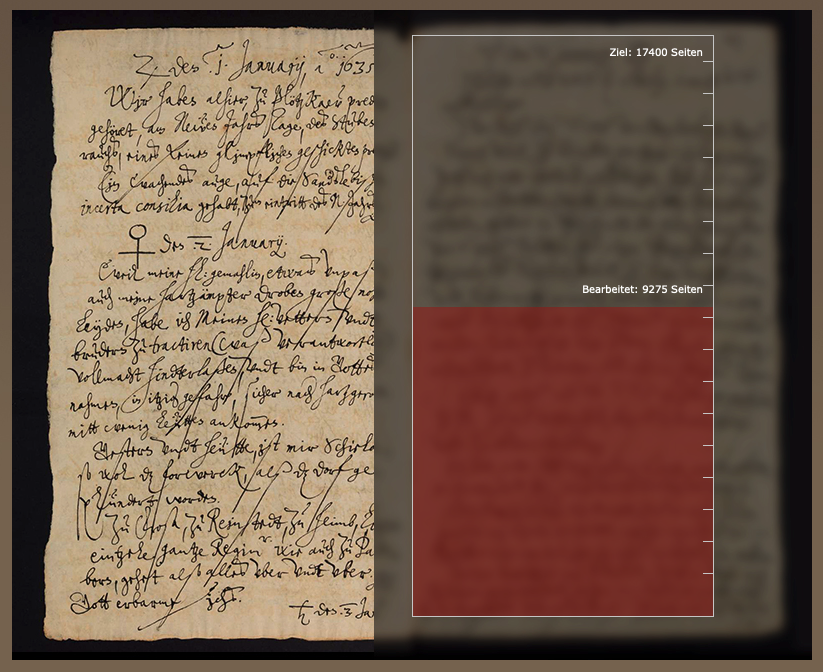
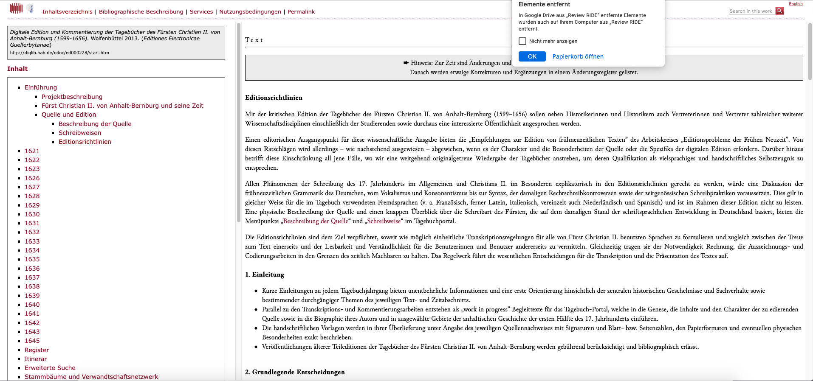
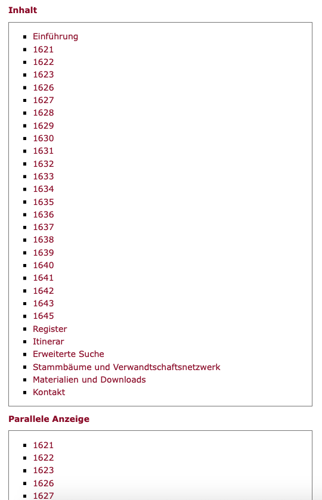
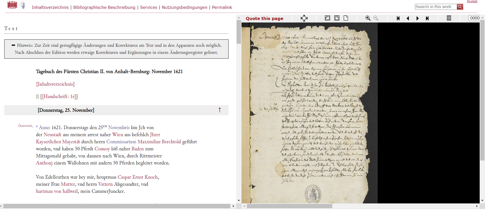
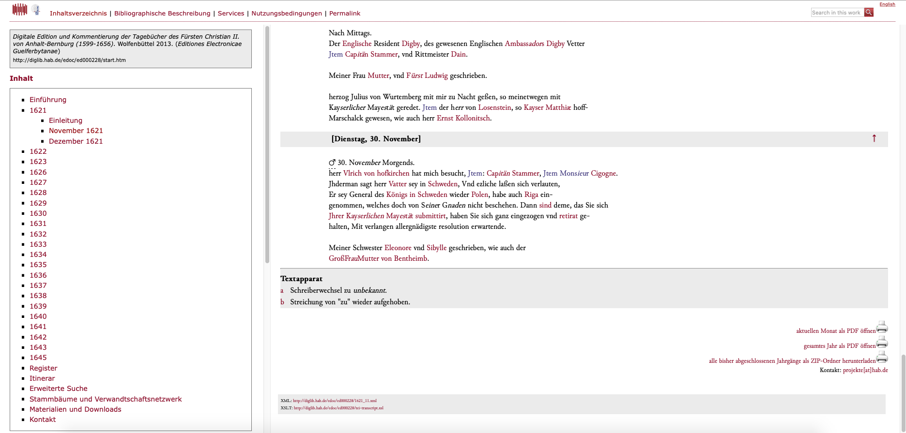
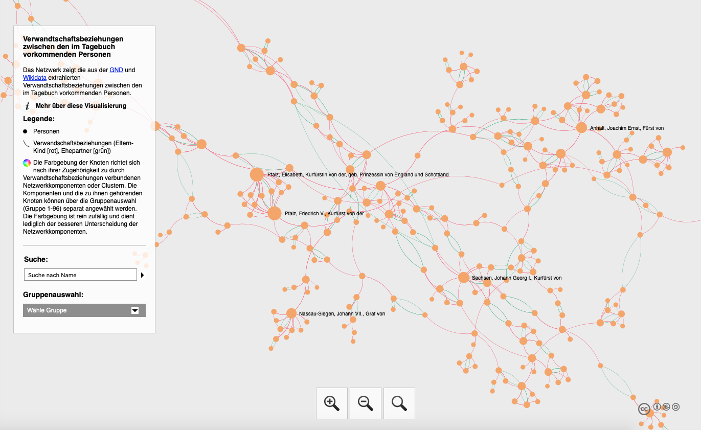
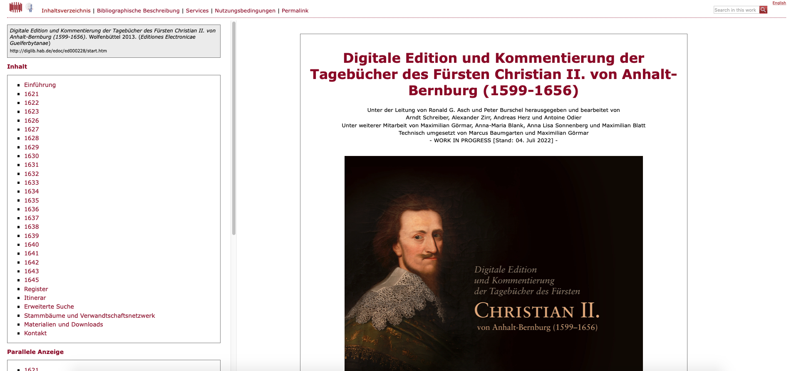

Digitale Edition und Kommentierung der Tagebücher des Fürsten Christian II. von Anhalt-Bernburg (1599–1656)
Table of Contents
Abstract
This review examines the Digital Edition of the Diaries of Prince Christian II. von Anhalt-Bernburg, implemented by the University of Freiburg and the Herzog August Bibliothek. The research project, which has been running since 2013 and has not yet been completed, aims to present the entire diary (diplomatic transcription and facsimiles) of the prince which comprises a total of approximately 17,400 pages. In its digital approach, the project offers a sound-text-presentation that far surpasses that of the print medium (e.g., enrichment with norm data, visualizations, provision of Linked Open Data), but the lack of technical documentation makes it difficult to trace the workflow, archiving, or even subsequent use of the data.
Einleitung
Bei den Tagebüchern (1621–1656) des Fürsten Christian II. von Anhalt-Bernburg handelt es sich sowohl quantitativ als auch qualitativ um eine aufschlussreiche Quelle: Die insgesamt 23 Bände (ca. 17.400 Seiten) bieten einen wertvollen Einblick in die Geschichte des frühen 17. Jahrhunderts, insbesondere zur Zeit des 30-jährigen Krieges. Das Selbstzeugnis des Fürsten ist durch einen hohen Anteil an Subjektivität charakterisiert, was aber im Licht von vormodernen Selbstzeugnissen kein Alleinstellungsmerkmal darstellt. Auffällig ist hingehen die Nähe der Quelle zu Reisetagebüchern, da der Fürst die Routen seiner zahlreichen Reisen notiert, durchbrochen von narrativen Einschüben. Autobiographische Schriften der Vormoderne wurden meist für die eigenen Nachkommen verfasst (Völker-Rasor 1996, Schulze 1996), so schreibt auch der Fürst Christian II. in einer Familientradition und für die nachfolgenden Generationen. Die umfangreiche Quelle ist für viele Fächer und Disziplinen bedeutsam – zum Beispiel für Militär-, Politik, Sozial-, Alltags und Geschlechtergeschichte, für Hof- und Adelsforschung, für allgemeine Kulturgeschichte oder grundsätzlich der Erforschung zu frühneuzeitlichen Selbstzeugnissen, wie in der einführenden Projektbeschreibung dargelegt wird. Die kritische digitale Edition (http://www.tagebuch-christian-ii-anhalt.de) soll sämtliche Tagebücher des Fürsten verfügbar machen, denn bisher sind nur sehr kleine Teile davon in Teil- und Auswahleditionen erschienen (Aretin 1804, Krause 1858, Dittmar 1894, Wäschke 1906/1908/1915, Specht 1938).
Weitere Beispiele für digitale Editionen von Selbstzeugnissen der frühen Neuzeit aus dem deutschsprachigen Raum sind beispielsweise die „Digitale Edition des Diariums von Herzog August dem Jüngeren“ (1579–1666), welches das knapp 40 Jahre umfassende Diarium des Herzogs von Braunschweig und Lüneburg zur Verfügung stellt, und das Projekt „Philipp Hainhofer: Reiseberichte & Sammlungsbeschreibungen 1594–1636“, welches eine digitale Edition der Reiseberichte des Augsburger Kaufherrn Philipp Hainhofers bereitstellt, wobei an beiden Projekten ebenfalls die Herzog August Bibliothek Wolfenbüttel beteiligt ist (Ralle 2017, Wenzel 2020–2022). 2018 wurde „Das Kloster-Tagebuch des Einsiedlers Paters Joseph Dietrich, 1670–1704“ als kommentierte Online-Edition veröffentlicht und eine Quelle aus dem 18. Jahrhundert präsentiert das Projekt „Johann Christian Senckenberg (1707–1772): Digitale Edition der Tagebücher“ (Rohr/Schwarz 2018–, Hausinger/Jehn 2010–).
Bei der Digitalen Edition der Tagebücher des Fürsten Christian II. von Anhalt-Bernburg handelt es sich um ein DFG-finanziertes Forschungsprojekt, das seit 2013 für eine Laufzeit von 12 Jahren angesetzt und zum derzeitigen Zeitpunkt noch nicht abgeschlossen ist. Dementsprechend lassen sich auf der Editionswebsite immer wieder Hinweise finden, dass momentan Änderungen an Text und Apparaten möglich sind; diese würden jedoch später in einem Änderungsverzeichnis vermerkt werden.1 Innerhalb einer dreijährigen Pilotphase wurden die Texte der Jahre 1635 bis 1637 transkribiert und veröffentlicht. Mittlerweile stehen die Jahre 1621 bis 1645 zur Verfügung, wobei aus dem Webauftritt nicht hervorgeht, wann welche Teile veröffentlicht wurden - Informationen zur Digitalisierung sind jedoch auf Nachforschung in den Metadaten der jeweiligen TEI-Dokumente enthalten.2

Das Projekt wird von der Universität Freiburg und der Herzog August Bibliothek umgesetzt und unter der Leitung von Ronald G. Asch und Peter Burschel herausgegeben. Der Webauftritt der Digitalen Edition stellt das Projektteam außer mit einer Listung aller Beteiligten nicht näher vor, allerdings lassen sich detaillierte Informationen zu Mitarbeiterinnen und Mitarbeitern und deren Aufgabenbereichen im daneben existierenden Projektportal finden.
Gegenstand und Inhalt
Die digitale Edition hat die Erschließung sämtlicher Tagebücher des Fürsten zum Ziel, denn bisher blieb trotz Teil- und Auswahleditionen 92% des Textes unediert – die bereits veröffentlichten Editionen wurden im Projekt berücksichtigt und auch bibliographisch vermerkt, wie in der Projektbeschreibung auf der Webseite der Digitalen Edition festgehalten wird. Die Tagebücher sind zum Großteil in deutscher Sprache verfasst, sie enthalten aber auch französische, italienische, lateinische, spanische und niederländische Passagen.
Der Webauftritt der Edition ist äußerst umfangreich: Neben einer Textsynopse aus diplomatischer Transkription und Faksimiles, Übersetzungen der fremdsprachigen Passagen, Personen-, Orts-, Körperschafts- und Sachregister und Glossare der im Text zitierten Werke und Bibelstellen gibt es erläuternde Kommentare, Suchmasken für die unterschiedlichen Entitäten, eine Volltextsuche und anschauliches Kartenmaterial. Darüber hinaus werden Visualisierungen wie Stammbäume oder ein Verwandtschaftsnetzwerk zur Verfügung gestellt. Unter „Materialien und Downloads“ wird noch zusätzliches Material angeboten, z. B. eine Netzwerkvisualisierung der Verwandtschaftsbeziehungen, Linked Open Data im RDF/XML- und BEACON-Format und ein weiterführender Link zum parallel existierenden Projektportal.
Ziele und Methoden

Die Tagebücher der Vormoderne wurden meist nicht als „Zwiesprache mit seinem [eigenen] Ich“ (Völker-Rasor 1996, 111) verfasst, sondern für die Nachwelt, insbesondere für die eigenen Nachkommen. So richten sich die Texte, die meist auch ohne Veröffentlichungsintention verfasst werden, an eine äußerst reduzierte Leserschaft, wodurch sich der Inhalt für einen Leser oft nur schwer erschließen lässt (Dumont 2020, 175). Die Aufgabe einer Tagebuchedition ist daher unter anderem, den Text möglichst rezipierbar und verständlich zur Verfügung zu stellen, aber auch den ursprünglichen Sinnzusammenhang zu erschließen und zu erläutern (Hurlebusch 1995, 29). Die digitale Edition der Tagebücher des Fürsten wird dieser Anforderung gerecht, indem neben dem Tagebuchtext jedem Jahrgang eine Einleitung vorangestellt wird, welche die beschriebenen Ereignisse in den Tagebüchern in einen weiteren historischen Kontext einbettet und Bezug auf einzelne Tagebucheinträge nimmt.
Die Texte wurden nach den Richtlinien der Text Encoding Initiative kodiert; das bedeutet, es wurde ein standardisiertes Datenmodell verwendet, wodurch die Daten grundsätzlich weiterverarbeit- und nachnutzbar sind – leider fehlt jedoch jegliche Dokumentation der Datenmodellierung. Generell wird jegliche technische Dokumentation vermisst – der Webauftritt der Digitalen Edition bietet umfangreiche Begleittexte zur Person des Fürsten, eine Beschreibung der Quelle und detaillierte Editionsrichtlinien, aber Hinweise zur Datenmodellierung, Kodierungsentscheidungen oder eine ausführlichere Beschreibung zur Archivierung der Daten, abgesehen von der Verlinkung zu den Daten auf GitLab 4, fehlen vollends.
Umsetzung und Präsentation
Editionstext


Im Text werden Entitäten wie Personen oder Orte dunkelrot hervorgehoben, mit Klick darauf erscheint ein Fenster mit weiteren Informationen, Normdaten (falls vorhanden) und auch eine direkte Verknüpfung zur MWW-Personensuche 5 oder der Deutschen Biographie 6. Die Übersetzung fremdsprachiger Wörter oder Passagen (in violetter Farbe ausgewiesen) erhält man ebenfalls mit Mausklick auf die jeweilige Stelle.
Das Datenmodell verwendet entsprechende Tags der TEI:
- die einzelnen Tagebucheinträge werden mit
<div type="entry">kodiert - Datumsangaben mit
<date>und dem normalisierten Datum im@when-iso-Attribut - innerhalb von
<div type="entry">werden dem Tagebuchtext<index>-Elemente vorangestellt, mit Hilfe derer bei der Darstellung der Texte auf der Webseite dem jeweiligen Jahrgang ein Inhaltsverzeichnis generiert wird - in den Registern erfasste Einträge werden in der Tagebuchtranskription
mit
<rs>getagged - Sachanmerkungen und Übersetzungen mit
<note> - fremdsprachige Stellen mit
<foreign>, Abbreviaturen mit<ex> - Revisionen der Schreiber7 mit
<subst>,<del>und<add> - weitere Auffälligkeiten in der Handschrift wie Schäden
(
<damage>) oder unklare Stellen (<unclear>) werden ebenfalls annotiert

Register und Itinerar

<listPerson>, <listPlace>,
<listOrg> und <taxonomy>, wie es
mittlerweile Standard für digitale Editionen ist. Die Einträge sind mit Normdaten
(GND, GeoNames), ggf. Anmerkungen und weiterführenden Links ausgestattet; außerdem
werden die jeweiligen Fundstellen auf der Website mit direkter Verlinkung in den
Editionstext ausgewiesen. In den TEI-Dokumenten der Register sind die Fundstellen
leider nicht modelliert, wie es z. B. mit <linkGrp> und
<ptr> möglich gewesen wäre. Das Ortsregister kann nicht nur
tabellarisch genutzt werden – auch eine kartographische Ansicht wurde mit HIlfe
des DARIAH-DE Geo-Browser umgesetzt, in der jene erwähnten Orte aus dem Tagebuch
verzeichnet sind, zu denen eine GeoNames-ID ausgemacht werden konnte. Die
Reisewege Christians II. wurden in einem Itinerar verzeichnet, welches ebenfalls
tabellarisch oder kartographisch aufgerufen werden kann (siehe Abb. 6). Die digitale Edition stellt
außerdem Register aller in den Tagebüchern erwähnten Bibelstellen und zitierten
Werke zur Verfügung.
Visualisierungen, Materialien und Downloads

Unter dem Menüpunkt „Materialien und Downloads“ wird Linked Open Data im RDF/XML-Format der Personen, Orte und Körperschaften angeboten; außerdem auch BEACON-Daten und Verlinkungen zu den XML-Dateien auf GitLab. Hier versteckt sich auch der Link zum parallel existierenden Projektportal, welches neben einigen einführenden Texten, die auch in der Digitalen Edition zu finden sind, eine Zeitleiste und zusätzliches Karten- und Bildmaterial zur Verfügung stellt.
Suche
Die digitale Edition bietet neben einer Volltextsuche auch eine erweiterte Suche, die, wie in einer Erläuterung der Suche vermerkt, komplexe Suchabfragen ermöglicht: Es können der Suchzeitraum eingeschränkt und Registerbegriffe mit der Volltextsuche kombiniert werden. Die Bereitstellung der Registerbegriffe stellt eine wertvolle Hilfestellung dar, allerdings wirft der Versuch einer Auswahl von Personen, die im Register verzeichnet sind, eine Fehlermeldung aus. Die erweiterte Suche erlaubt Trunkierung und die Ergebnisse sind mit den relevanten Einträgen in den Tagebüchern verlinkt.
Usability und Navigation

Metadaten und Zitierweise
Die Bereitstellung von Metadaten wird bei der HTML-Ausgabe der
einzelnen Tagebuchtexte leider nicht berücksichtigt, obwohl sie in den
TEI-Dokumenten kodiert wären – hier sind Veröffentlichungsdatum, Mitarbeiterinnen
und Mitarbeiter und deren Aufgabenbereiche und der Herausgeber der elektronischen
Ressource verzeichnet. Unter „Bibliographische Beschreibung“ wird allerdings eine
METS-Datei zur Verfügung gestellt, in der Informationen zu den Tagebuchtexten und
sämtlichen begleitenden Texten verzeichnet sind. Die Quelle selbst wird in den
TEI-Dokumenten des Tagebuchs nicht beschrieben, wie es normalerweise innerhalb von
<sourceDesc> üblich wäre. Auch die Beschreibung der
einzelnen Bände, welche sich durchaus im Webauftritt der digitalen Edition finden
lässt, wurde nur mit einer Tabellenstruktur annotiert.
Anzumerken ist die mangelhafte Zitierbarkeit der Digitalen Edition. Es werden zwar vorbildhaft ein bibliographischer Hinweis und ein Permalink bereitgestellt, beide beziehen sich allerdings nur auf die digitale Edition im Gesamten - es gibt somit keine punktgenaue Möglichkeit Zitate fest referenzierbar anzugeben, was für digitale Editionen nicht nur äußerst wichtig wäre, sondern eventuell auch die Akzeptanz der Nutzerinnen und Nutzer aus der historischen Fachwissenschaft schmälern dürfte. In der METS-Datei sind IDs zu den einzelnen Texten verzeichnet und man kann auch vom Inhaltsverzeichnis zu den einzelnen Monaten einen URL zu einem Tag kopieren, es wird allerdings keine Hilfestellung gegeben, wie man die einzelnen Unterseiten der digitalen Edition direkt zitieren könnte. Die URL der Startseite verändert sich beim Navigieren in andere Bereiche der Edition nicht.
Rechte und Lizenzen, Langzeitarchivierung
Sämtliche Inhalte der Edition stehen, wie in den oben prominent
verlinkten Nutzungsbedingungen formuliert wird, unter einer Creative Commons
BY-SA-Lizenz zur Verfügung, was bedeutet, dass sie unter Namensnennung unter
gleichen Bedingungen weiterverwendet werden dürfen. Die Lizenzen wurden außerdem
in den TEI-Dokumenten im <teiHeader> kodiert. Die Edition wird
von der Wolfenbütteler Digitale Bibliothek bereitgestellt, welche die Daten laut
eigener Auskunft sorgfältig auf zwei unterschiedlichen Servern archiviert,
außerdem wird die langfristige Erreichbarkeit der digitalen Objekte laut der
Institution garantiert. Diese Information geht jedoch nicht aus der Digitalen
Edition hervor, sondern konnte nur hier über Umwege auf einer Website der
8 gefunden werden.
FAIR-Prinzipien
Findable
Die digitale Edition ist mit Hilfe einer Suchmaschine einfach auffindbar, außerdem werden auch das Projektportal, Projektbeschreibungen und bereits erschienene, begleitende Publikationen gelistet. Die Edition scheint sowohl im Katalog von Patrick Sahle als auch in jenem von Greta Franzini auf, auch in der DARIAH Collection Registry wird sie angegeben. Über Bibliothekskataloge wie den KVK oder Plattformen wie die DDB (Deutsche Digitale Bibliothek) oder Europeana ist sie (noch) nicht zu finden, was wahrscheinlich dem Umstand geschuldet ist, dass sie work in progress darstellt. Dasselbe gilt für die OAI-PMH: Die Wolfenbütteler Digitale Bibliothek bekundet zwar, dass Metadaten über eine OAI-Schnittstelle zur Verfügung gestellt werden, diese konnten im Zuge einer Recherche für das Tagebuch allerdings (noch) nicht aufgefunden werden, was eventuell an der noch laufenden Projektzeit liegt.9 Leider wurden die einzelnen TEI-Dokumente, die den Tagebuchtext enthalten, nicht unter einem PID (Persistent Identifier, ein stabiler Identifikator für digitale Ressourcen) archiviert, wodurch sie nicht stabil referenzierbar sind.
Accessible
Die Edition und deren Inhalte sind für Nutzerinnen und Nutzer frei zugänglich, denn die XML-Dateien werden sowohl einzeln (auf der Webseite), als auch als Gesamtdownload (GitLab-Repositorium) angeboten. Auf der Website wird zwar per Button rechts oben theoretisch die Möglichkeit gegeben, sich die Texte auch auf Englisch anzeigen zu lassen, praktisch allerdings passiert bei Klick auf den Button nichts, außer dass man wieder auf der (deutschen) Startseite landet. Leider wird nicht erläutert, ob noch geplant ist, diese Möglichkeit der Sprachauswahl zu implementieren. Das Interface ist benutzerfreundlich gestaltet – die Texte sind aufgrund der Farbwahl der Edition leicht zu erfassen und die Schriftgröße lässt sich durch browsereigene Zoommöglichkeiten verändern.
Interoperable
Die Texte sind nach den Richtlinien der TEI annotiert, was grundsätzlich die Nachnutzbarkeit und Weiterverwendbarkeit der Daten ermöglicht; allerdings wurden die Kodierungsrichtlinien nicht zur Verfügung gestellt und das in den TEI-Dokumenten referenzierte ODD-Schema 10 scheint kein projektspezifisches zu sein.
Begrüßenswert ist die Bereitstellung der Registerdaten als Linked Open Data im RDF/XML-Format (plus Dokumentation), außerdem können die im Rahmen der Digitalen Edition ausgezeichneten Personen mit GND-Nummer als Liste im BEACON-Format abgerufen werden.
Reusable
Die Daten werden unter dem Editionstext zum Download zur Verfügung gestellt, wie oben bereits beschrieben. Die PDF-Dateien können hier einzeln, zu einem Jahrgang gebündelt oder innerhalb eines ZIP-Ordners gesamt heruntergeladen werden; als XML-Download steht hier (eher versteckt) leider nur das einzelne TEI/XML-Dokument des ausgewählten Textes zur Verfügung. Alle XML-Dateien gesammelt können jedoch vom GitLab-Repositorium heruntergeladen werden, auf das unter „Materialien und Downloads“ verlinkt wird.
Wie ausgeführt, werden die Bedingungen zur Nachnutzung in der
allgemeinen Nutzungsvereinbarung formuliert (CC BY-SA); die Lizenzen werden aber
auch in der TEI/XML-Kodierung im <teiHeader> festgehalten,
ebenso wie Metadaten zur digitalen Ressource.
Fazit
Die digitale Edition der Tagebücher des Fürsten Christian II. von Anhalt-Bernburg stellt eine äußerst umfangreiche und zeitgeschichtlich interessante Quelle zur Verfügung. Sie folgt dem von Patrick Sahle definierten digitalen Paradigma (2013, 148) einer Digitalen Edition durch:
- Bereitstellung von hochauflösenden Faksimiles mit Zoommöglichkeiten
- Hypertext
- Datenmodellierung nach den Richtlinien der Text Encoding Initiative und Anreicherung der Texte mit Normdaten
- Linked Open Data
- diverse Browsing- und Suchmöglichkeiten
- die über die reine Textpräsentation hinausgehenden Visualisierungen (interaktives Kartenmaterial, Verwandtschaftsnetzwerk)
Es ist zu begrüßen, dass die Edition als work in progress mit Angaben zum Datum der letzten Änderung veröffentlicht wird, allerdings wäre es darüber hinaus wünschenswert, wenn genauere Hinweise zum Fortschritt der Edition und zu weiteren geplanten Vorhaben auf der Editionsseite verfügbar wären. Zum derzeitigen Stand bleibt unklar, ob z. B. die erweiterte Suche noch repariert wird, wann weitere Daten veröffentlicht werden (Editionsplan), und ob die Metadaten der TEI-Dokumente des Tagebuchs noch über eine OAI-Schnittstelle zur Verfügung gestellt werden. Darüber hinaus würden es kollaborative Elemente (z. B. Kommentarfunktionen) erlauben, verschiedene fachwissenschaftliche Erkenntnisse für die Erschließung der Texte beizutragen.
Einer digitalen wissenschaftlichen Edition muss eine Dokumentation zugrunde liegen - zwar wurde diese Mindestanforderung mit der Projektbeschreibung und den Editionsrichtlinien erfüllt, aber jegliche technische Dokumentation zur Datenmodellierung (Kodierungsrichtlinien, projektspezifisches Schema, Hinweise zum Workflow bzw. verwendete Methoden und Tools) oder Langzeitarchivierung fehlen auf der Editionswebsite; dasselbe gilt für die Zurverfügungstellung von Metadaten abseits der Kodierung in den TEI/XML-Dokumenten. Leider sind auch Zitierfähigkeit und stabile Referenzierung aufgrund des Fehlens von persistenten Identifikatoren zu bemängeln.
Die digitale Edition erfüllt das in der Projektbeschreibung genannte Ziel, das Tagebuch mit Faksimiles und einem dokumentennah transkribierten Editionstext zu präsentieren, wobei das Projekt aber noch nicht abgeschlossen ist und noch 11 von den insgesamt 35 Jahren, zu denen Fürst Christian II. von Anhalt-Bernburg seinen Text verfasste, fehlen. Die Erschließung dieser einzigartigen und durch die Quantität herausfordernden Quelle mit Normdaten, Sachanmerkungen, Erläuterungen und besonderem begleitenden Material wie interaktiven Karten und der Netzwerkvisualisierung stellt einen fruchtbringenden Forschungsbeitrag dar.
Bibliography
- Arbeitskreis „Editionsprobleme der Frühen Neuzeit“, Hrsg. 2013. Empfehlungen zur Edition frühneuzeitlicher Texte. https://web.archive.org/web/20230120162822/https://www.heimatforschung-regensburg.de/280/1/E-Forum_AHF-Empfehlungen.pdf
- Aretin, Johann Christoph von, Hrsg. 1804. „Tagebuch des Prinzen Christian von Anhalt, über die Kriegsvorfälle des Jahres 1620.“ In Beyträge zur Geschichte und Literatur, vorzüglich aus den Schätzen der pfalzbairischen Centralbibliothek zu München, 2.6: 65-96; 3.1: 49-112; 3.2: 49-112.
- Catalogue of Digital Editions. Digitale Edition und Kommentierung der Tagebücher des Fürsten Christian II. von Anhalt-Bernburg (1599–1656). https://web.archive.org/web/20220822104154/https:/dig-ed-cat.acdh.oeaw.ac.at/editions/detail/208.
- Dittmar, Max. 1894. „Aus dem Tagebuche des Fürsten Christian des Jüngeren von Anhalt-Bernburg. Aufzeichnungen, die Zerstörung Magdeburgs, die Unterredung des Fürsten Christian mit dem Administrator Christian Wilhelm von Brandenburg und den Entsatz Magdeburgs durch Pappenheim betreffen.“ Geschichts-Blätter für Stadt und Land Magdeburg, 29: 90.136.
- Dumont, Stefan. 2020. „Kommentieren in digitalen Brief- und Tagebuch-Editionen.“ In Annotieren, Kommentieren, Erläutern. Aspekte des Medienwandels, hrsg. von Winfried Woesler, 175-193. De Gruyter: Berlin, Boston.
- Gephi. https://web.archive.org/web/20230120162821/https://gephi.org/.
- Hausinger Angela, und Matias Jehn, Hrsg. 2010–. Johann Christian Senckenberg (1707-1772): Digitale Edition der Tagebücher. Frankfurt am Main: Goethe-Universität / Universitätsbibliothek Johann Christian Senckenberg.
- Hurlebusch, Klaus. 1995. „Divergenzen des Schreibens vom Lesen. Besonderheiten der Tagebuch- und Briefedition.“ In editio. Internationales Jahrbuch für Editionswissenschaft, 9: 18- 36.
- Krause, Gottlieb, Hrsg. 1858. Tagebuch Christians des Jüngeren, Fürst zu Anhalt: niedergeschrieben in seiner Haft zu Wien, im Geleite Kaiser Ferdinands des Zweiten zur Vermählungsfeier nach Inspruck, auf dem Reichstage zu Regensburg, und während seiner Reisen und Rasten in Deutschland, Dänemark und Italien. Leipzig: Dyk.
- Ralle, Inga Hanna, Hrsg. 2017. Selbstzeugnisse der Frühen Neuzeit in der Herzog August Bibliothek. Digitale Edition der Diariums von Herzog August dem Jüngeren, unter Mitarbeit von Jacqueline Krone, technische Konzeption und Begleitung durch David Maus. Wolfenbüttel: Herzog August Bibliothek.
- Rohr, Christian und Gabriela Schwarz Zanetti, Hrsg. 2018–. Das Kloster-Tagebuch des Einsiedler Paters Joseph Dietrich (1670-1704). Bern: Historisches Institut der Universität Bern.
- Sahle, Patrick. 2013. Digitale Editionsformen. Zum Umgang mit der Überlieferung unter den Bedingungen des Medienwandels. Teil 3: Textbegriffe und Recodierung. Norderstedt: Books on demand.
- Sahle, Patrick et. al, Hrsg. 2020ff. A catalogue of Digital Scholarly Editions. Digitale Edition und Kommentierung der Tagebücher des Fürsten Christian II. von Anhalt-Bernburg (1599-1656). https://web.archive.org/web/20220822104105/https:/www.digitale-edition.de/exist/apps/editions-browser/index.html?facet-index=e123.
- Schulze, Winfried, Hrsg. 1996. Ego-Dokumente. Annäherung an den Menschen in der Geschichte. Berlin: Akademie Verlag.
- Specht, Reinhold. 1938. „Fürst Christians II. von Anhalt Aufenthalt und Reisen 1645 und 1651 im Harz.“ Zeitschrift des Harz-Vereins für Geschichte und Altertumskunde, 71: 117–124.
- Völker-Rasor, Anette. 1996. „‘Arbeitsam, obgleich etwas verschlafen…‘ – die Autobiographie des 16. Jahrhunderts als Ego-Dokument“. In Ego-Dokumente. Annäherung an den Menschen in der Geschichte, hrsg. von Winfried Schulze. Berlin: Akademie Verlag.
- Wäschke, Hermann. 1906. „Die Belagerung und Zerstörung Magdeburgs. Tagebuchblätter.“ Geschichts-Blätter für Stadt und Land Magdeburg, 41: 318–327.
- Wäschke, Hermann. 1908. „Aus dem Tagebuch des Fürsten Christian II. von Anhalt-Bernburg. Beiträge zur Geschichte des dreißigjährigen Krieges.“ Zeitschrift des Vereins für Kirchengeschichte in der Provinz Sachsen, 5: 53–78.
- Wäschke, Hermann. 1915. „Eindrücke vom Kurfürstentag zu Regensburg 1630. Auszüge aus dem Tagebuch Christians II. von Anhalt.“ Deutsche Geschichtsblätter, 16: 57–76, 103–132 und 147–152.
- Wenzel, Michael, Hrsg. 2020–2022. Philipp Hainhofer. Reiseberichte & Sammlungsbeschreibungen 1594-1636. Wolfenbüttel: Herzog August Bibliothek.
- Wilkinson, M. D. et al. 2016. „The FAIR Guiding Principles for scientific data management and stewardship“. Scientific Data, 3: 1–9. https://doi.org/10.1038/sdata.2016.18.
Notes
- Dieses Review bezieht sich auf den Stand der Edition vom 04.07.2022. ↑
-
Innerhalb des
<publicationStmt>mit<date @type="digitised">. ↑ - Projektportal der digitalen Edition der Tagebücher des Fürsten Christian II.: https://web.archive.org/web/20220822102714/http:/www.tagebuch-christian-ii-anhalt.de/index.php?article_id=14. ↑
- GitLab-Repositorium der digitalen Edition der Tagebücher des Fürsten Christian II. Zugegriffen am 16. November 2022. https://web.archive.org/web/20221116122133/https://git.hab.de/goermar/tagebuch-christian-ii-xml. ↑
- MWW Personensuche. Zugegriffen am 16. November 2022. https://web.archive.org/web/20221116122523/http://beaconfinder.mww-forschung.de/. ↑
- Deutsche Biographie. Zugegriffen am 16. November 2022. https://web.archive.org/web/20221116122630/https://www.deutsche-biographie.de/home. ↑
- Der Fürst schrieb das Tagebuch großteils selbst nieder, Passagen anderer Schreiber wurden in den TEI-Dokumenten kodiert. ↑
- Digitale Bibliothek der Herzog August Bibliothek. Zugegriffen am 16. November 2022. https://web.archive.org/web/20221102142805/http://diglib.hab.de/. ↑
- Das Editionsprojekt wird gelistet, Metadaten zu den einzelnen TEI-Dokumenten jedoch nicht. ↑
- ODD-Schema der digitalen Edition der Tagebücher des Fürsten Christian II. Zugegriffen am 16. November 2022. https://web.archive.org/web/20221116125448/https://diglib.hab.de/rules/schema/tei/P5/v2.8.0/tei-p5-transcr.xsd. ↑
@article{tagebuecher-christian-ii,
author = {Galka, Selina},
title = {Digitale Edition und Kommentierung der Tagebücher des Fürsten Christian II. von
Anhalt-Bernburg (1599–1656)},
journal = {RIDE – A review journal for digital editions and resources},
number = {16},
year = {2023},
doi = {10.18716/ride.a.16.2},
url = {https://doi.org/10.18716/ride.a.16.2},
}TY - JOUR
AU - Galka, Selina
TI - Digitale Edition und Kommentierung der Tagebücher des Fürsten Christian II. von
Anhalt-Bernburg (1599–1656)
T2 - RIDE – A review journal for digital editions and resources
IS - 16
PY - 2023
DA - 2023/03
DO - 10.18716/ride.a.16.2
UR - https://doi.org/10.18716/ride.a.16.2
PB - Institut für Dokumentologie und Editorik e.V.
LA - de
ER - Galka, S. (2023). Digitale Edition und Kommentierung der Tagebücher des Fürsten Christian II. von
Anhalt-Bernburg (1599–1656). RIDE – A review journal for digital editions and resources, (16). https://doi.org/10.18716/ride.a.16.2Galka, Selina. "Digitale Edition und Kommentierung der Tagebücher des Fürsten Christian II. von
Anhalt-Bernburg (1599–1656)." RIDE – A review journal for digital editions and resources, no. 16, 2023. https://doi.org/10.18716/ride.a.16.2.Galka, Selina. "Digitale Edition und Kommentierung der Tagebücher des Fürsten Christian II. von
Anhalt-Bernburg (1599–1656)." RIDE – A review journal for digital editions and resources, no. 16 (2023). https://doi.org/10.18716/ride.a.16.2.